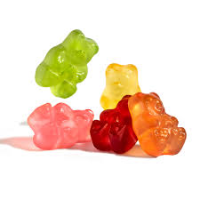

gum gum fruit

Description
Gomu gomu
Ingredients
- 1 tablespoon unflavored gelatin
- 2 tablespoons cold water
- 1/2 cup fruit juice (apple, orange, or berry)
- 1 tablespoon honey or sugar
- Food coloring (optional)
- Gummy bear molds
- Dropper or pipette
Steps
- Bloom the gelatin by sprinkling it over two tablespoons of cold water in a small bowl. Let it sit for 5 minutes.
- In a small saucepan, heat the fruit juice and honey (or sugar) over medium heat until dissolved, stirring gently.
- Add the bloomed gelatin to the hot juice mixture and stir until completely melted.
- Optionally, add a few drops of food coloring to achieve the desired color for your gummy bears.
- Use a dropper or pipette to carefully fill gummy bear molds with the mixture.
- Refrigerate the filled molds for at least one hour, or until the gummy bears are set.
- Once set, remove the gummy bears from the molds by gently pushing from the bottom.
- Store the gummy bears in an airtight container in the refrigerator for up to a week.